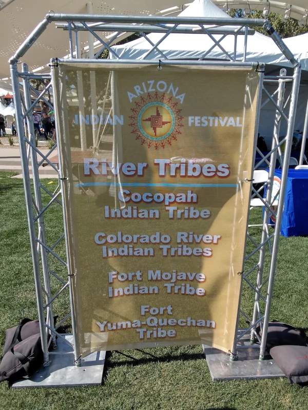
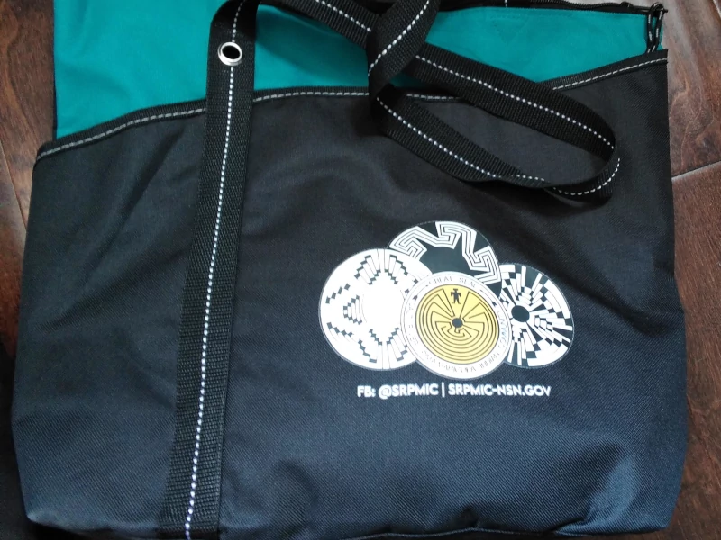
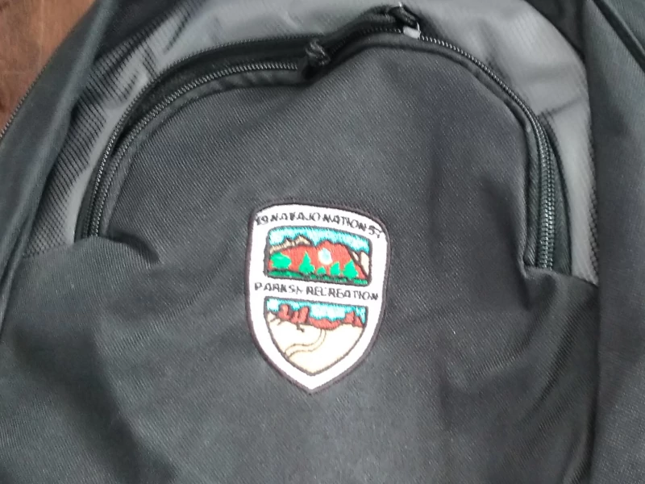

Arizona Indian Festival 2023
It was an educative opportunityI had the opportunity to attend the American Indian Festival in Scottsdale today.
22 Federally Recognized Tribes in Arizona
The festival was a fantastic learning experience for children and adults alike, showcasing the diverse cultures of the 22 tribes in the state.

Hospitality
One of the highlights was seeing the traditional buildings and architecture, which gave a glimpse into the history and heritage of the tribes. I was also pleasantly surprised to receive gifts from both casinos and board committees.

The traditional performances and music were both entertaining and enlightening. For lunch, we had some cheeseburgers and hotdogs. I am grateful for the chance to visit this festival and discover more about the vibrant culture of the American Indian community in Scottsdale.
P.S. Finding a parking spot was a challenge, as I was not aware of the high attendance. However, the welcoming and friendly atmosphere made up for the difficulty in parking.
For your reference: Arizona Indian Festival 2023 by The Arizona American Indian Tourism Association